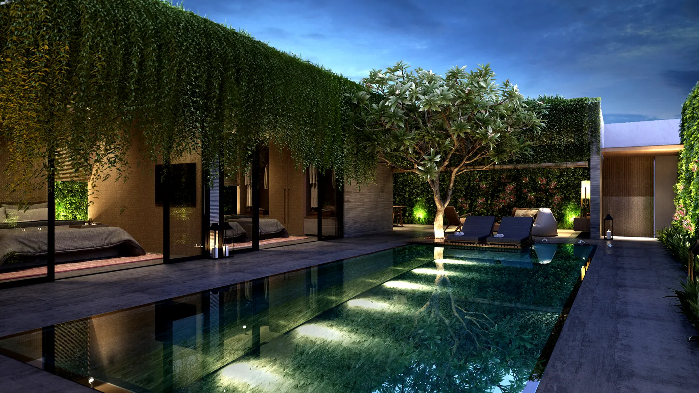
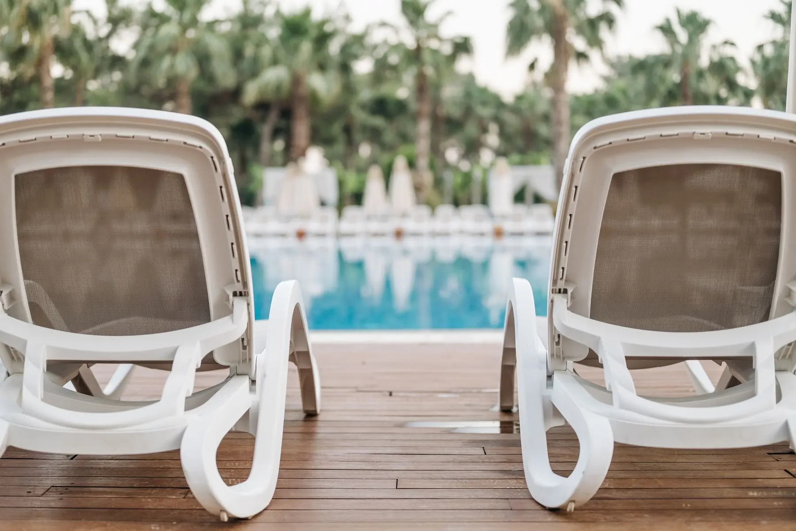
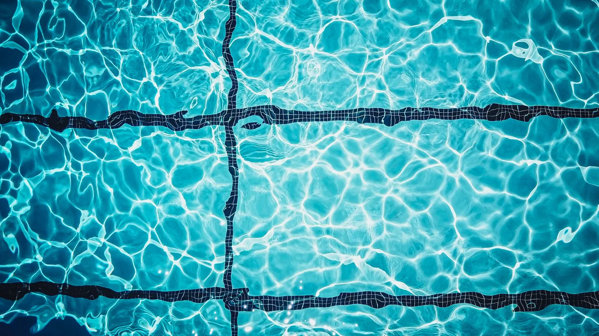
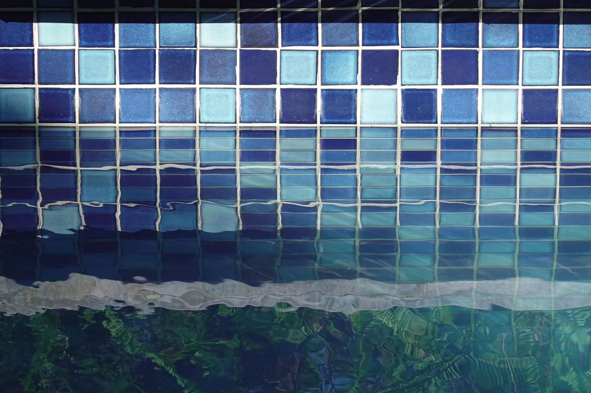
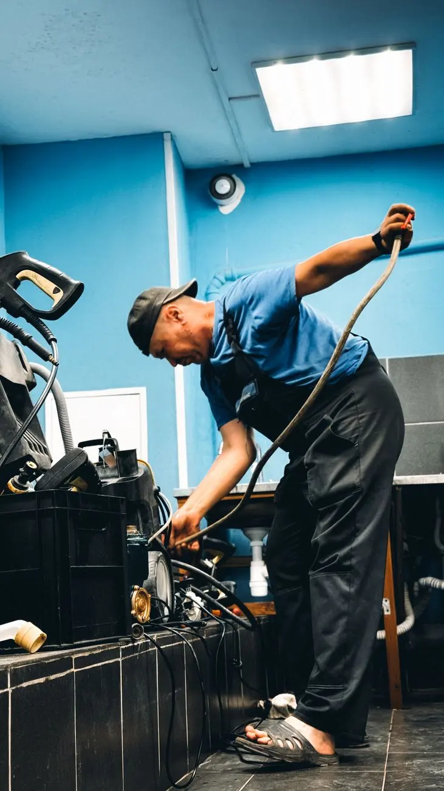
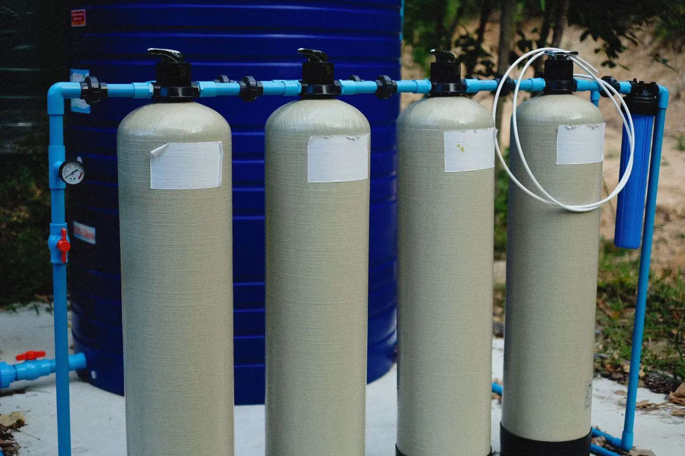
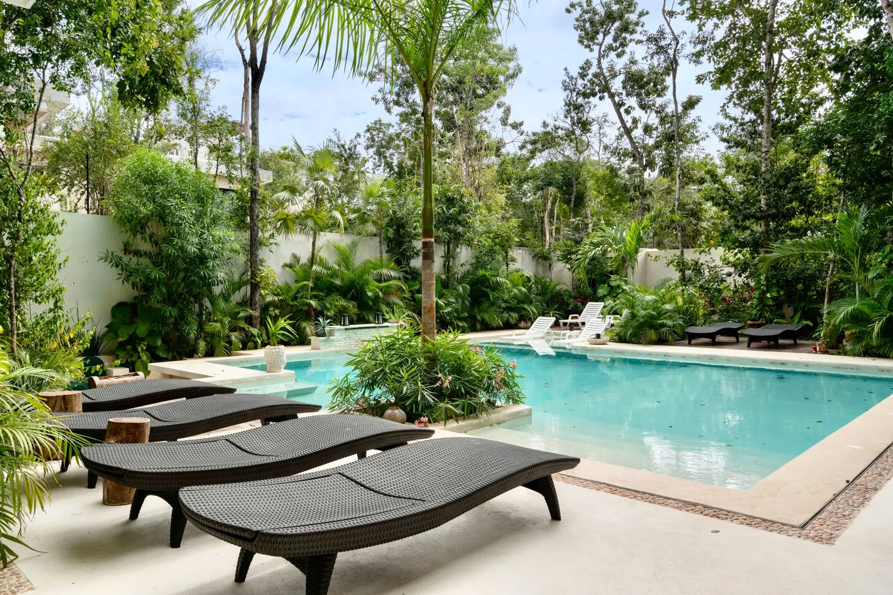

Three plans covering everything from a straightforward screened pool to a pool-and-spa with a salt system and heater. Every one of them is quoted on your pool before you commit to anything.
Every plan includes the weekly visit and the Pool Health Report. What changes is how much of the chemistry and equipment care sits inside the flat monthly rate instead of on your bill as an add-on — so each plan shows you what it covers and, where it matters, what it doesn't.
Weekly service and balanced water. Pay for the chemicals you use.
Flat monthly pricing, year round. The bill does not move with the seasons.
For the pool you would rather never think about at all.
Prices shown are starting prices for a standard residential pool on a weekly route. Every account is subject to a price quote by a technician or at the point of sale - pool size, surface, equipment, screen enclosure and tree cover all move the number. We quote before we service, and the quote is the price.
| Halo Essentialfrom $129/mo | Halo Completefrom $179/mo | Halo Signaturefrom $249/mo | |
|---|---|---|---|
| Weekly visit & Pool Health Report | Included | Included | Included |
| Routine chemicals | Billed as used | All routine chemicals included | All routine chemicals included |
| Filter cleans | — | Every 4 weeks, with cartridge inspection | Every 2 weeks |
| Salt cell | Inspected every visit | Inspected every visit | Descaled as needed on salt systems |
| Scheduling | — | Priority scheduling on service calls | Service day locked in · front of the queue |
| Repairs | Quoted before any work starts | No trip or diagnostic charge | Repair labor at half price · 50% off filter replacement |
Single visits while you're travelling, or a short run of them. No plan, no commitment, no reconnection fee when you get back.

The same sequence every week, in the same order. Consistency is most of what keeps a pool from going wrong.

Test free and total chlorine, pH, total alkalinity, cyanuric acid and salt where applicable. Dose to bring the water back into range, and record both the reading and the dose.

Skim the surface, brush the walls, steps and tile line, and vacuum when the pool needs it rather than on a fixed schedule you're paying for whether it helps or not.

Empty the skimmer and pump baskets, check filter pressure against its clean baseline, and look over the pump, heater and automation for anything starting to go.
When your pool is marked complete on the route, the report sends automatically. No one has to remember to write it, which is why it actually arrives every week.
Photos have to be captured on site to be attached, so they can't be an old picture pulled from a camera roll. That constraint is the whole point.
Tap any reading to see its trend

Quoted before any work starts, and billed separately from your monthly plan. We would rather tell you a part has two years left than replace it today.
We test and balance the water, skim the surface, brush the walls and tile line, vacuum as needed, empty the skimmer and pump baskets, and check filter pressure and equipment. Every visit ends with a Pool Health Report emailed to you.
On Halo Essential, routine chemicals are billed as used. On Halo Complete and Halo Signature they are included in the flat monthly rate, so your bill does not move with the seasons.
Yes. Pumps, motors, heaters, salt cells, filters, timers and automation. Repairs are quoted before any work starts and are billed separately from your monthly plan. Halo Complete removes the trip and diagnostic charge, and Halo Signature bills repair labor at half our standard rate.
Usually. Green-pool recovery is quoted as a one-off job based on what we find, and once the water is clear we can put the pool onto a weekly plan.
We service a small number of HOA and commercial pools on our route. Call us and we will tell you honestly whether we can do it properly.

Get a free quote and we'll tell you what it costs and which day we run near you. No follow-up if it isn't for you.